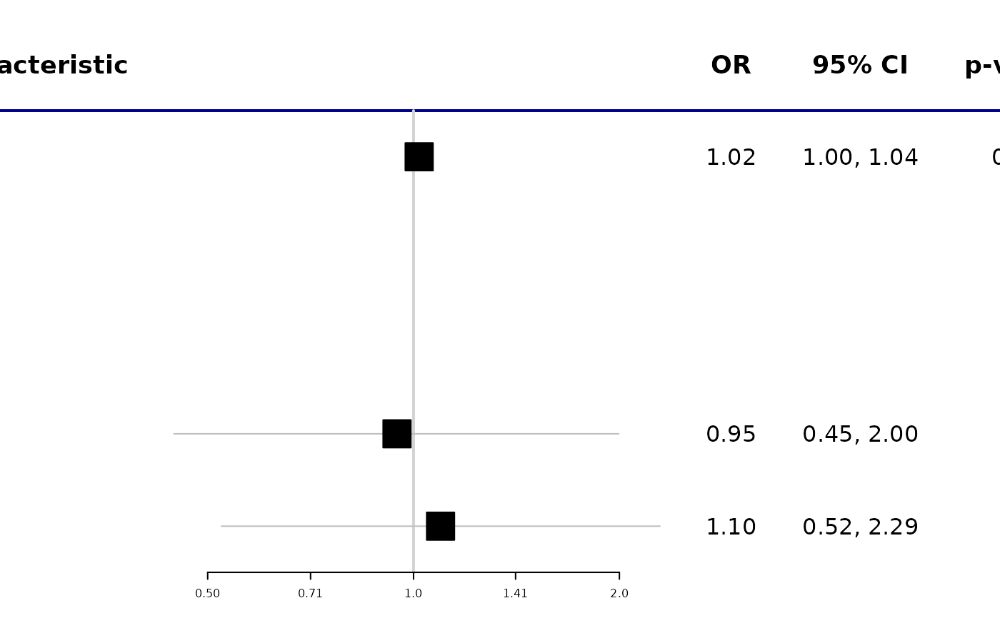

![[Experimental]](figures/lifecycle-experimental.svg) This function takes a gtsummary table and converts it to a
forest plot using
This function takes a gtsummary table and converts it to a
forest plot using forestplot::forestplot().
as_forest_plot(
x,
col_names = c("estimate", "ci", "p.value"),
graph.pos = 2,
boxsize = 0.3,
title_line_color = "darkblue",
xlog = x$inputs$exponentiate,
...
)Arguments
- x
a gtsummary object of class
"tbl_regression"or"tbl_uvregression"- col_names
names of columns in
x$table_bodyto print on the RHS of the forest plot. Default isc("estimate", "ci", "p.value")- graph.pos
The position of the graph element within the table of text. The position can be
1-(ncol(labeltext) + 1). You can also choose set the position to"left"or"right".- boxsize
Override the default box size based on precision
- title_line_color
color of line that appears above forest plot. Default is
"darkblue"- xlog
If TRUE, x-axis tick marks are to follow a logarithmic scale, e.g. for logistic regression (OR), survival estimates (HR), Poisson regression etc. Note: This is an intentional break with the original
forestplotfunction as I've found that exponentiated ticks/clips/zero effect are more difficult to for non-statisticians and there are sometimes issues with rounding the tick marks properly.- ...
arguments passed to
forestplot::forestplot()
Examples
library(gtsummary)
library(survival)
# Example 1 ----------------------------------
tbl_uvregression(
trial[c("response", "age", "grade")],
method = glm,
y = response,
method.args = list(family = binomial),
exponentiate = TRUE
) %>%
as_forest_plot()

# Example 2 ------------------------------------
tbl <-
coxph(Surv(ttdeath, death) ~ age + marker, trial) %>%
tbl_regression(exponentiate = TRUE) %>%
add_n()
as_forest_plot(tbl, col_names = c("stat_n", "estimate", "ci", "p.value"))
 # Example 3 ----------------------------------
tbl %>%
modify_cols_merge(
pattern = "{estimate} ({ci})",
rows = !is.na(estimate)
) %>%
modify_header(estimate = "HR (95% CI)") %>%
as_forest_plot(
col_names = c("estimate", "p.value"),
boxsize = 0.2,
col = forestplot::fpColors(box = "darkred")
)
#> Warning: `modify_cols_merge()` was deprecated in gtsummary 1.6.1.
#> ℹ Please use `modify_column_merge()` instead.
# Example 3 ----------------------------------
tbl %>%
modify_cols_merge(
pattern = "{estimate} ({ci})",
rows = !is.na(estimate)
) %>%
modify_header(estimate = "HR (95% CI)") %>%
as_forest_plot(
col_names = c("estimate", "p.value"),
boxsize = 0.2,
col = forestplot::fpColors(box = "darkred")
)
#> Warning: `modify_cols_merge()` was deprecated in gtsummary 1.6.1.
#> ℹ Please use `modify_column_merge()` instead.